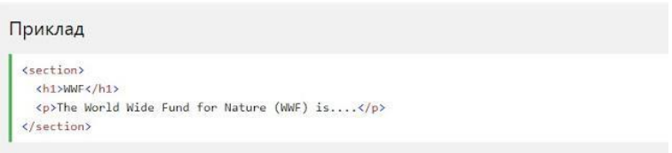
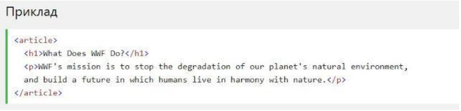
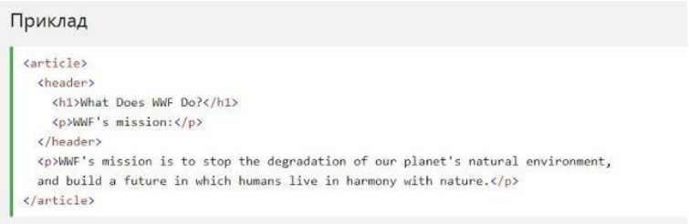

HTML5 Семантичні елементи
Семантичний елемент чітко описує його значення як для браузера, так і для розробника.
Приклади не семантичних елементів: ‹div› і ‹span›- нічого не говорить
про його вміст.
Приклади семантичних елементів: ‹form›, ‹table› і ‹article›- чітко визначає його зміст.
Підтримка браузерів
Семантичні елементи HTML5 підтримуються у всіх сучасних браузерах.
Крім того, ви можете "навчити" старих браузерів, як обробляти "невідомі елементи".
Прочитайте про це в підтримці браузера HTML5 .
До гори
Нові семантичні елементи в HTML5
HTML5 пропонує нові семантичні елементи для визначення різних частин веб-сторінки:
- ‹section›
- ‹article›
- ‹header›
- ‹footer›
До гори
HTML5 ‹section› елемент
Елемент ‹section› визначає розділ в документі.
Згідно з документацією в3к'с HTML5: "розділ представляє собою тематичну угруповання контенту, зазвичай з заголовком".
Домашня сторінка зазвичай може бути розділена на розділи для ознайомлення, змісту і контактної інформації.

До гори
HTML5 ‹article› елемент
Елемент ‹article› визначає незалежний, автономний вміст.
Стаття повинна мати сенс самостійно, і вона повинна мати можливість читати його незалежно від іншої частини веб-сайту.
Приклади того, де можна використовувати елемент ‹article›:
- Повідомлення на форумі
- блозі
- Газетна стаття

До гори
Елемент ‹header› задає заголовок для документа або розділу.
Елемент ‹header› повинен використовуватися в якості контейнера для вступного змісту.
В одному документі може бути кілька елементів ‹header›.
У наступному прикладі визначається заголовок для статті:

До гори
Елемент ‹footer›вказує нижній колонтитул для документа або розділу.
Нижній колонтитул зазвичай містить автора документа, інформацію про авторське право, посилання на умови використання, контактні дані і т.д.
В одному документі може бути кілька елементів ‹footer›.

До гори